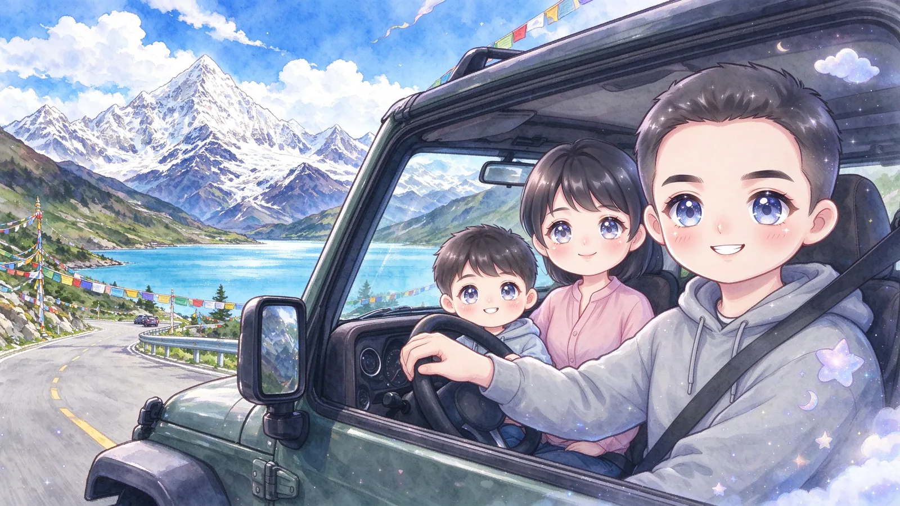

31°52′ NHEFEI → LANZHOU
0120
01 / ABOUT合肥 · 兰州 · 远方
一路走来，
每一步都算数。
从合肥的童年，到兰州独自生活的日子；从认真读书，到重新认识自己。那些得意、遗憾、相遇与远行，慢慢拼成了今天的我。
远离家乡，事事靠自己。保持独立与自律，也把终身学习、终身体育，留给更长的未来。
独立自律终身学习终身体育
20个成长片段
02座熟悉的城市
01句相信的话
“听从内心，未来可期。”
02 / THE STORY2005 — NOW
LIFE IN CHAPTERS
成长的二十个瞬间
从第一次出发，到又一次启程。
这里收藏着一路上的风景和心情。
正在打开这段经历……
NEXT, A NEW PAGE